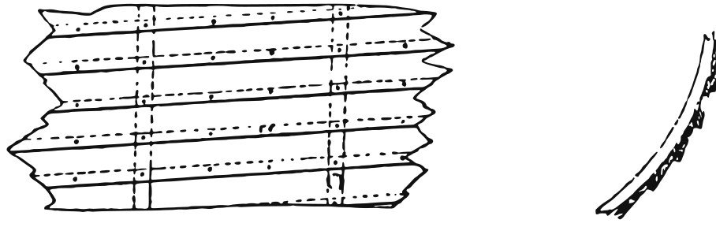
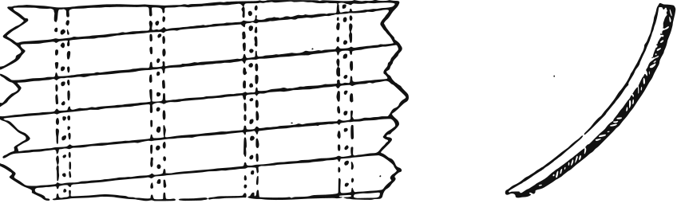
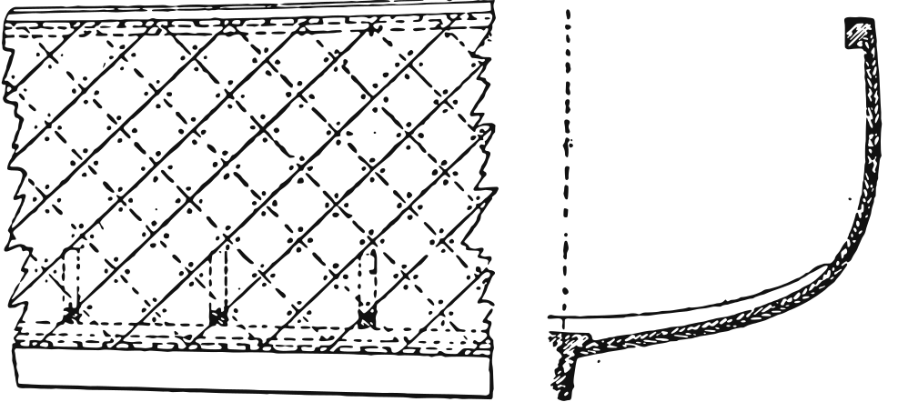
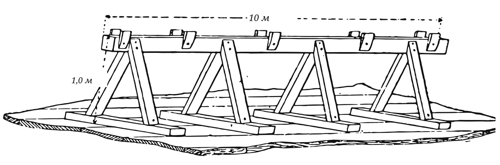
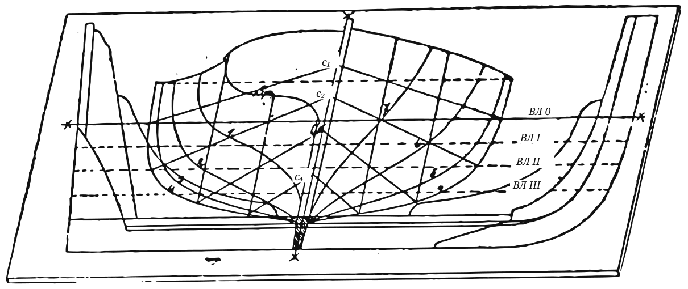
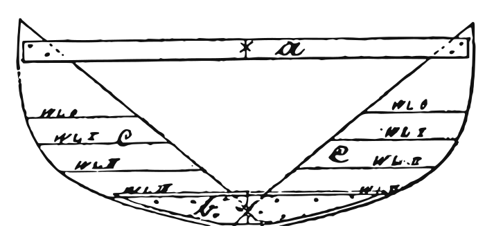

В январе 1885 года Wassersport открыл серию, которая, по обещанию редакции, должна была «чертёж за чертежом» объяснить, как на самом деле собирались прогулочные лодки того времени. Её автор, Т. Хайн из Киля, был человеком практики; он пишет для любителя, у которого есть сарай, несколько хороших инструментов и терпение следовать руководству, и ведёт читателя от выбора мастерской до последней оковки гребных банок.
Серия выходила шестью продолжениями с января по ноябрь 1885 года. Она приведена здесь полностью, со всеми рисунками подлинника, заново начерченными. Подзаголовки добавлены нами; выражения, которые нынешний лодочный мастер может не знать, объяснены в примечаниях. — Л. Дудаков
Под этим заголовком мы хотим дать ряд чертежей различно построенных и устроенных лодок с объяснениями их практической постройки. Мы полагаем, что эта тема представит большой интерес для владельцев яхт и лодок, для лодочных мастеров и вообще для нашего многочисленного круга читателей; речь идёт о наших любимцах, в которых мы проводим столько прекрасных часов, которым мы нередко доверяем свою жизнь, и, пожалуй, стоит труда познакомиться с ними поближе. Прежде всего задача — разъяснить прогулочные лодки, применяемые в так называемом малом спорте, и их различную постройку на практике.
У прогулочной лодки по обшивке различают три способа: клинкерный, вгладь (карвельный) и диагональный.

При клинкерной обшивке (см. рис. 1) отдельные доски соединяются тем, что пояса накладываются один на другой; их скрепляют медными или оцинкованными железными гвоздями, расклёпанными на подложенных шайбах.

При обшивке вгладь (см. рис. 2) пояса обшивки сходятся кромка к кромке; шпангоуты состоят из прочных, выпиленных по форме лодки брусьев. Две пунктирные линии обозначают шпангоут.
При диагональной обшивке (см. рис. 3) доски в два слоя идут под углом 45° от килевого шпунта до шпунта в привальном брусе, причём нижний слой наклонён под углом 45° назад, а верхний под углом 45° вперёд. Пунктирные линии показывают внутренний, сплошные — наружный слой досок.

Прежде чем приступить к собственно практической постройке лодки, нужно ещё кратко обсудить подготовку к постройке, место установки, стапель и т. д.
Для постройки лодки выбирают помещение под крышей, сарай и т. п., чтобы не подвергать постройку вредному действию погоды и её перемен. Лучше всего для этого, пожалуй, подойдёт деревянный сарай с хорошим верхним и боковым светом и дощатым полом или торцовой мостовой.
Затем надо изготовить длинные деревянные козлы по длине лодки; для обычного рода прогулочных лодок они могут быть длиной до 10 м. Эти козлы служат основанием лодки и исполняют ту же роль, что стапель у большого судна. Изготовить их можно по эскизу рис. 4, на котором размеры проставлены в метрах.

Теперь приступают к изготовлению плаза, на котором в натуральную величину разбивают «корпус», форштевень и ахтерштевень будущей лодки. Такой плаз с разбитыми на нём «корпусом», форштевнем и ахтерштевнем показывает рис. 5.

Теперь можно изготовлять лекала, которые делают из еловых досок толщиной 25 мм так, как показывает рис. 6, по отдельным линиям шпангоутов (на каждый шпангоут — одно лекало) и скрепляют между собой. Так как на плазу «корпусом» изображена лишь одна сторона лодки, на каждый шпангоут нужно изготовить два половинных лекала; а чтобы сложить лекало всего шпангоута, точки высоты и ширины планширя данного шпангоута откладывают и по другую сторону вытянутой линии шпангоута и по этой точке переворачивают одно половинное лекало.

Части c c — лекала, выработанные по соответствующей линии шпангоута, b — их нижняя связь, a — верхняя связь из рейки; последнюю надо положить так, чтобы её верхняя кромка совпала с верхней кромкой планширя, указанной на «корпусе».
Когда полученное таким образом лекало готово, на него наносят все имеющиеся на плазу ватерлинии, центры и среднюю линию «корпуса»; отмечают также номер шпангоута.
Когда по порядку готовы все лекала шпангоутов и лекала для форштевня и транца, можно приступать к изготовлению киля, форштевня и ахтерштевня, транца и носовой и кормовой подкладок (называемых также носовой и кормовой кницами).